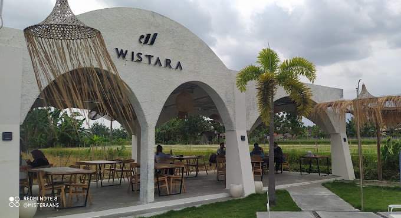
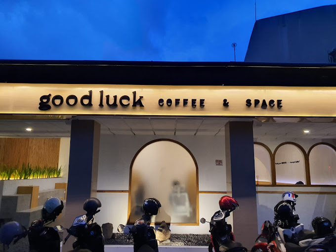
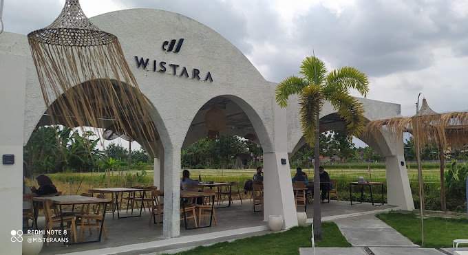
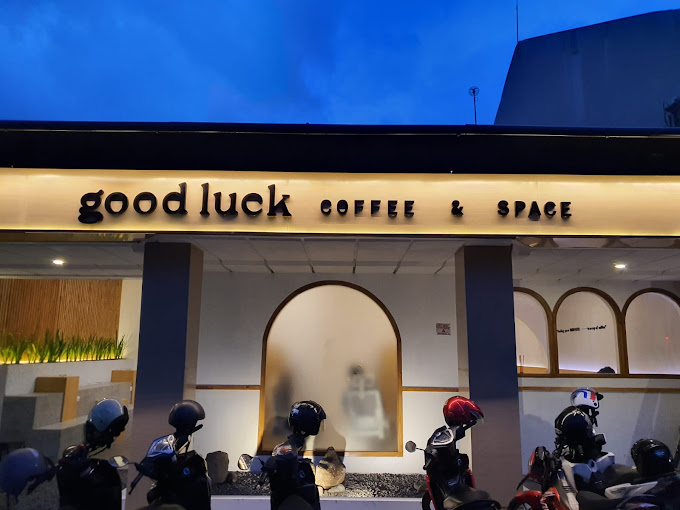

Selamat Datang di ngopiAja!!
Selamat datang di ngopiAja!!, tempat di mana para pencinta kopi di Jogja berkumpul untuk menemukan pengalaman ngopi terbaik. Di sini, kami berdedikasi untuk membagikan rekomendasi coffee shop terbaik di Yogyakarta yang menawarkan citarasa kopi yang luar biasa, suasana yang nyaman, dan pelayanan yang ramah. Jogja, kota budaya yang kaya akan sejarah dan kreativitas, juga menjadi surga bagi para pecinta kopi. Dari kafe-kafe tradisional dengan sentuhan lokal hingga tempat-tempat modern dengan konsep unik, setiap sudut kota ini menyimpan keajaiban kopi yang siap untuk Anda jelajahi. Melalui website ini, kami berharap dapat menjadi panduan Anda dalam menemukan tempat ngopi favorit yang tak hanya memuaskan lidah, tetapi juga memberikan kenangan yang tak terlupakan. Setiap coffee shop yang kami ulas telah dipilih dengan teliti untuk memastikan Anda mendapatkan yang terbaik dari yang terbaik. Mari jelajahi keajaiban kopi Jogja bersama kami, temukan tempat-tempat yang belum pernah Anda kunjungi, dan nikmati setiap tegukan kopi yang penuh kehangatan dan cerita. Selamat menikmati perjalanan rasa di Jogja! Salam hangat, Tim ngopiAja!!